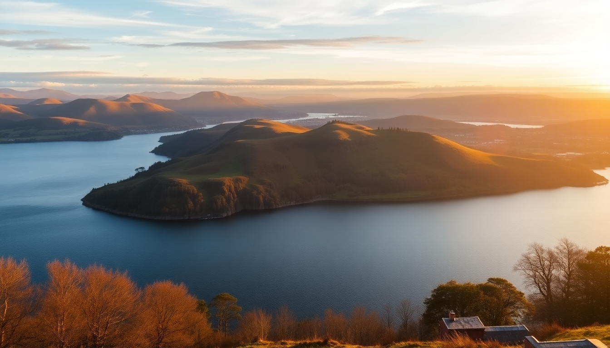

Day Trips from Edinburgh: Loch Lomond, Stirling & Rosslyn Chapel

I’ve done all three of these day trips from Edinburgh more times than I can count, and each one has its own personality. Loch Lomond is for wide-open scenery and fresh air. Stirling is for history and castle-hopping. Rosslyn Chapel is for the quiet, slightly mysterious detour. Below is exactly what I’d tell a friend — no fluff, just the logistics, honest opinions, and the places worth your time.
Why should I go to Loch Lomond instead of the Highlands?
If you’ve only got a single day, skip the Highlands. You’ll spend four hours on a bus each way and see mostly motorway. Loch Lomond is close enough — about an hour by car or train from Edinburgh — but still feels like a proper escape into the Trossachs.
I drove up early on a Saturday and parked at Balloch by 9 a.m. The car park near the Loch Lomond Shores complex fills fast, so aim to arrive before 10. From there, you can walk the shoreline path or hop on a boat cruise. I took a Sweeney’s Cruises 90-minute tour around the islands. It’s not thrilling, but it gives you a solid sense of the loch’s scale. The commentary is dry but informative.
For lunch, skip the overpriced café at the visitor centre. Walk ten minutes into Balloch village and grab a seat at The Clansman. Their fish and chips are solid, and the beer garden overlooks the Leven.
- Balloch — main access point; train from Edinburgh Queen Street takes 1 hour 40 minutes via Glasgow
- Luss — prettier village, but parking is a nightmare by 11 a.m.; go early or skip
- Conic Hill — 45-minute hike from Balmaha; best view-to-effort ratio in the area
- Loch Lomond Shores — shopping centre with aquarium; fine for families, skippable for adults
Is Stirling Castle worth the trip from Edinburgh?
Yes, but only if you book tickets online in advance. The queue at the ticket office on a summer Saturday can hit 30 minutes. I learned that the hard way. Stirling Castle is smaller than Edinburgh Castle, but I actually prefer it. It feels less crowded, the royal apartments are intact, and the Great Hall has a proper roof. The views from the ramparts over the Wallace Monument and the Forth Valley are the real payoff.
The train from Edinburgh Waverley to Stirling takes about 50 minutes. Once you’re at Stirling station, it’s a 15-minute uphill walk through the old town. I’d recommend taking a taxi — it’s £6 and saves your legs for the castle itself.
After the castle, walk down St John Street to The Portcullis for a pint. It’s a proper pub with cask ales and no tourist markup. For lunch, Brea on Baker Street does excellent sourdough sandwiches — their roast beef with horseradish is my go-to.
- Stirling Castle — book at historicenvironment.scot; allow 2.5 hours inside
- Wallace Monument — 20-minute walk from the castle; steep climb but worth it for the view
- Church of the Holy Rude — medieval church next to the castle; free and often empty
- Old Town Jail — quirky museum; skip if you’re short on time
How do I get to Rosslyn Chapel without a car?
Rosslyn Chapel is only about 30 minutes south of Edinburgh by car, but public transport takes a bit more planning. From Edinburgh, take the Lothian Bus 37 from Princes Street to the village of Roslin. The ride is about 45 minutes and drops you a 10-minute walk from the chapel. Alternatively, you can take the train from Edinburgh Waverley to Eskbank and then a short bus or taxi — I’ve done both, and the bus is simpler.
The chapel itself is small. I mean, really small. You can see everything in 45 minutes, even if you read every plaque. The carvings are the main draw — the Apprentice Pillar and the Green Men are genuinely impressive. But the hype around The Da Vinci Code has inflated expectations. Go for the craft, not the conspiracy.
I’d combine Rosslyn with a walk through Roslin Glen, a wooded gorge with a river and an old gunpowder mill. The path starts right behind the chapel car park and takes about an hour for the loop. For a meal, The Original Rosslyn Inn across the road does decent pub food — their steak pie is filling and fair value.
- Rosslyn Chapel — book timed tickets online; £9.50 adult
- Roslin Glen — free; good for a post-chapel wander
- Lothian Bus 37 — runs every 30 minutes from Edinburgh city centre
- The Original Rosslyn Inn — solid pub; book a table on weekends
Can I combine Stirling and Rosslyn Chapel in one day?
Technically yes, but I wouldn’t recommend it. Stirling is north, Rosslyn is south, and you’ll lose a couple of hours just driving between them. If you’re set on a double-header, drive to Stirling first (45 minutes from Edinburgh), spend the morning at the castle, then drive to Rosslyn (about an hour south) for the afternoon. You’ll be tired by 4 p.m., and you’ll miss the deeper experience of either place.
I tried this once with visiting friends. We rushed through Stirling Castle in two hours, skipped the Wallace Monument entirely, and arrived at Rosslyn just as a tour group was leaving. The chapel felt claustrophobic with the remaining crowd, and we didn’t do the glen walk. My friends said they preferred a full day at Stirling alone on a later trip.
- Best combo — Loch Lomond on one day, Stirling on another; save Rosslyn for a half-day
- If you must combine — drive; public transport between Stirling and Rosslyn is two changes and 2.5 hours
What is the best time of year for these trips?
Late spring (May to June) and early autumn (September to October) are ideal. The crowds are thinner than July and August, and the weather is more reliable. I did Stirling in mid-September and had the castle ramparts almost to myself. Loch Lomond in June is gorgeous — the midges haven’t arrived yet, and the hills are green.
Avoid August if you can. Edinburgh is packed with Festival crowds, and the day-trip destinations get spillover. Rosslyn Chapel in August had a 40-minute queue when I passed by last year. Winter is fine if you don’t mind short days — the castle interiors and pubs are warm, and the loch looks dramatic in grey light.
- May–June — best balance of weather and low crowds
- July–August — busy; book everything in advance
- October — autumn colours at Loch Lomond are stunning
- December–February — quiet, but some boat tours stop running
FAQ
Is Loch Lomond worth visiting if I only have half a day? Yes, but stick to Balloch or Luss. You won’t have time for a hike or a cruise, but a walk along the shore and a pub lunch is a solid half-day. The train from Glasgow Queen Street to Balloch takes 40 minutes, so it’s doable from Edinburgh with a 7 a.m. start.
Do I need to book Stirling Castle tickets in advance? Yes, especially from April to October. Walk-up tickets are often sold out by 11 a.m. on weekends. Online tickets are cheaper too — £16 vs £18 at the gate. Book at historicenvironment.scot.
Is Rosslyn Chapel accessible for wheelchair users? Partially. The ground floor is accessible, but the upper gallery and crypt are not. The path from the car park is sloped but manageable. The chapel staff are helpful and can arrange a reserved parking spot if you call ahead.